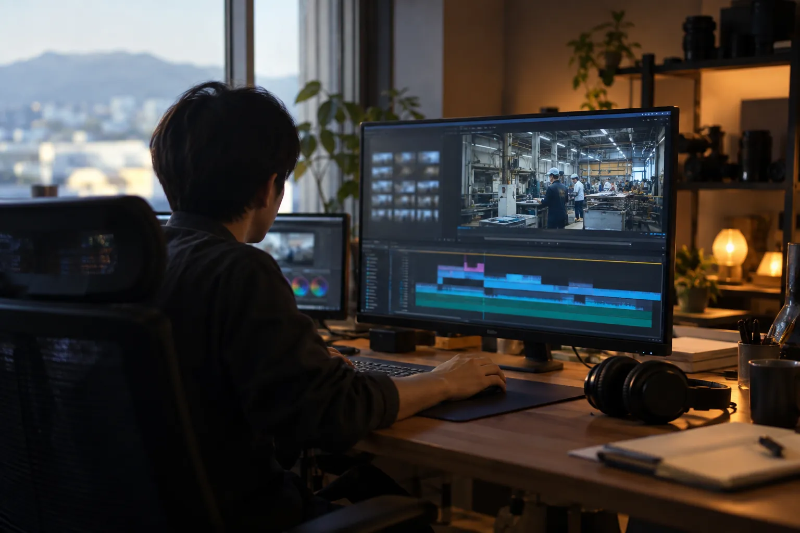
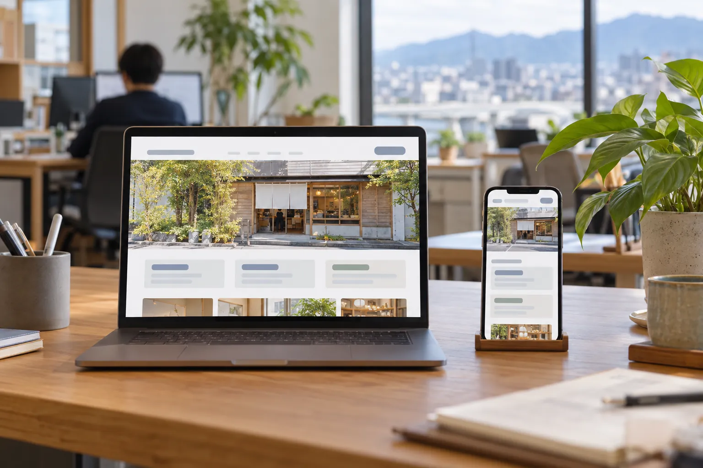
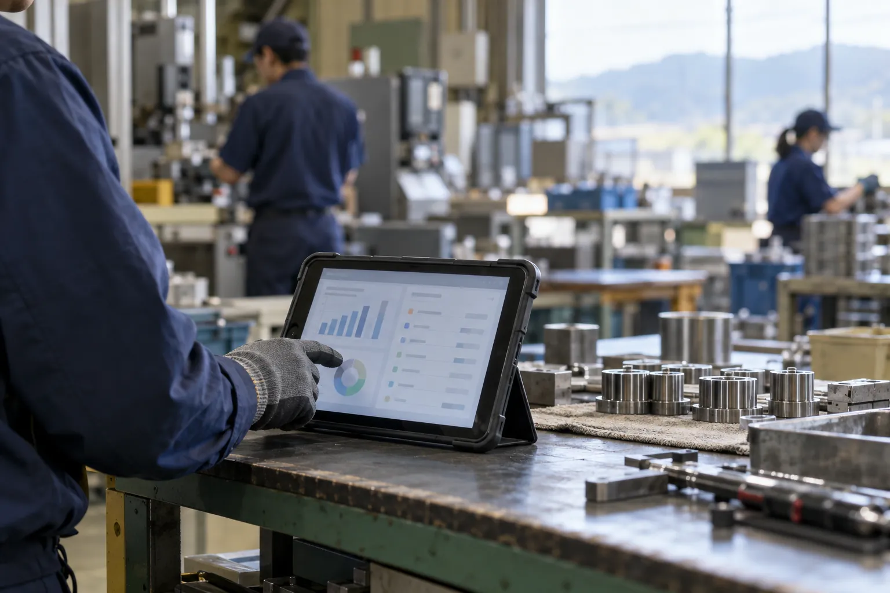
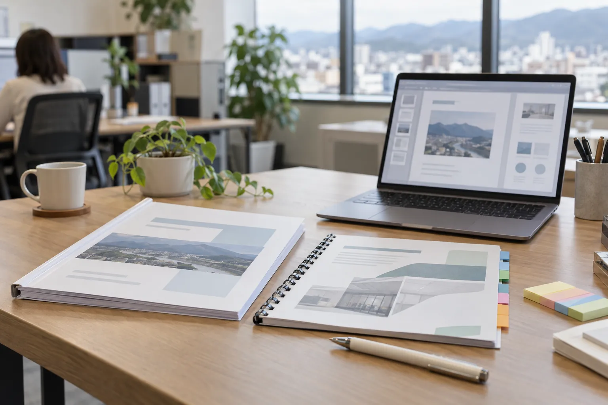

02 ／ PRODUCTION
AIおまかせ制作
専門の仕事を、まるごとおまかせ。
動画も、ホームページも、業務のシステムも。これまで専門の会社に頼んでいた作業を、AIを使って短い期間で仕上げます。人に頼むより早く、費用も抑えることを目指しています。
作業を相談する安く、早く、何度でも直せる。
AIで作ると、専門の会社に頼むより費用を抑え、短い期間で仕上げられます。最初の形がすぐに出るので、見ながら何度でも直せます。動画もホームページも資料も、使う道具は種類ごとに最新のものから選びます。
こんな会社に
- CASE 01動画やホームページを作りたいが、外注の見積もりが高い
- CASE 02表計算と紙で回している仕事を、画面で扱えるようにしたい
- CASE 03提案書やマニュアルを書く時間が、社内にない
引き受ける作業

01
動画Movie
会社や商品の紹介動画、社員教育の動画、SNS用の短い動画。台本から映像、仕上げまで引き受けます。
使える技術2026年10月時点
- 映像生成
- Veo、Seedance、Kling、Runway
- 画像
- GPT Image、Nano Banana、Midjourney
- 音
- ElevenLabs、Suno、Lyria
- 編集
- Adobe Premiere、CapCut、HyperFrames
02
音声動画Voice
ナレーション付きのスライド動画や、二人が語り合う対談形式の動画。AIの声で、収録なしに作ります。
使える技術2026年10月時点
- 声
- ElevenLabs、Gemini TTS
- アバター・多言語
- HeyGen
- 編集
- Descript、CapCut

03
ホームページWebsite
会社のホームページ、商品やサービスのLP。古くなったページの作り直しも引き受けます。
使える技術2026年10月時点
- 制作
- Claude Code、v0、Lovable
- 画像
- GPT Image、Nano Banana、Adobe Firefly
- 公開
- Cloudflare、Vercel

04
WebシステムSystem
社内の業務アプリ、受講や申し込みの管理画面、診断やクイズ。表計算で回している仕事を、使いやすい画面にします。
使える技術2026年10月時点
- 開発
- Claude Code、Codex、Cursor
- 試作
- v0、Bolt
- つなぐ
- MCP、n8n、Zapier
- 公開
- Cloudflare、Vercel
05
資料づくりDocuments
企画書や提案書、発表やセミナーの投影資料。要件を読み込み、図や表まで含めて組み立てます。
使える技術2026年10月時点
- 作成
- Canva AI、Microsoft 365 Copilot、Google Workspace の Gemini
- 図
- GPT Image、Nano Banana
- 構成
- Claude

06
ブンショWriting
マニュアル、議事録、記事、本の原稿。読む人に合わせて書き、仕上げの確認は人の目で行います。
使える技術2026年10月時点
- 書く
- Claude、ChatGPT、Gemini
- 調べる
- Deep Research、Perplexity
- 文字起こし
- Plaud、Notta、tl;dv
表やデータの整理、画像づくり、翻訳、社内向けの案内文。ここにない作業も、まず聞かせてください。
作業の進め方
1.一言で相談
「こういうものが欲しい」を、そのまま聞かせてください。
2.お見積もり
作業の量と納期を伺って、金額をお出しします。
3.たたき台
早い段階で形にしてお見せし、見ながら直していきます。
4.納品
仕上げの確認は人の目で。公開や運用の手伝いもできます。
たたき台を見ながら、言葉や見た目をその場で直していけます。
事例・活用例

研修のPV 6本を、生成費576円で
- 課題
- 研修の各章の冒頭に流す、短い映像がほしい。外注すると時間も費用もかかる。
- 使ったもの
- GPT Image（静止画）、Veo（映像生成）、HyperFrames（組み立て）
- できたこと
- 約1分のPVを6本。映像の生成にかかった費用は576円でした（弊社の研修で使用）。

業界ニュースを、毎日の音声動画に
- 課題
- 業界の動きを社員や取引先に届けたいが、毎日まとめる時間がない。
- 使ったもの
- Claude（台本）、Gemini TTS（声）、HyperFrames（動画）
- できたこと
- ニュースの一覧から台本・声・動画までを毎日作る仕組みで、30本以上を配信しています。

このページも、AIで作っています
- 課題
- 見せたいサービスが多く、何屋かが一目で伝わるページがほしい。
- 使ったもの
- Claude Code（設計・実装・検査）、GPT Image（写真調の絵）
- できたこと
- トップと3つのサービスページを、設計から画像・検査までAIを使って作りました。
AIで作ると、ここが変わる
弊社で作ったものと、企業が公式に発表している例です。
- 弊社
職人向け講座の動画教材をAIで制作した台本、ナレーション、画面づくりまでAIで仕上げ、受講サイトで配信しています。
60本以上受講サイトで配信中の動画教材 - WHITE株式会社（横浜市）
撮影も出演者もなしで、自社のCMを作った画像生成、映像化、音声のAIを組み合わせ、1名が1か月で約1分のCMを仕上げました。
約1.5万円ツール費（人件費を除く）｜出典：同社発表（2026） - 秀和株式会社 AYANOKOJI（京都市）
がま口の着用写真を、AIで作るようにした熟練スタッフが約8時間かけていた6カットを、1時間程度で作れるようになりました。
約1時間6カットの制作時間｜出典：サービス提供元（FIGUR）の発表（2026）
Price
費用は、都度お見積もり
作業の種類、量、納期で変わります。専門の会社に頼んだときの見積もりがお手元にあれば、比べられるように一緒にお見せください。
ご相談から開始まで
STEP 1
フォームから相談
やりたいことや困っている作業を、そのまま書いてください。
STEP 2
お話を伺い、お見積もり
内容と期限を伺い、進め方と金額をご提案します。
STEP 3
開始
ご納得いただけたら始めます。途中で内容を変えたいときも、ご相談ください。
ほかのサービス


Contact
「これ、作れる？」から
聞かせてください。
相談はフォームから受け付けています。内容を読んで、こちらからご連絡します。